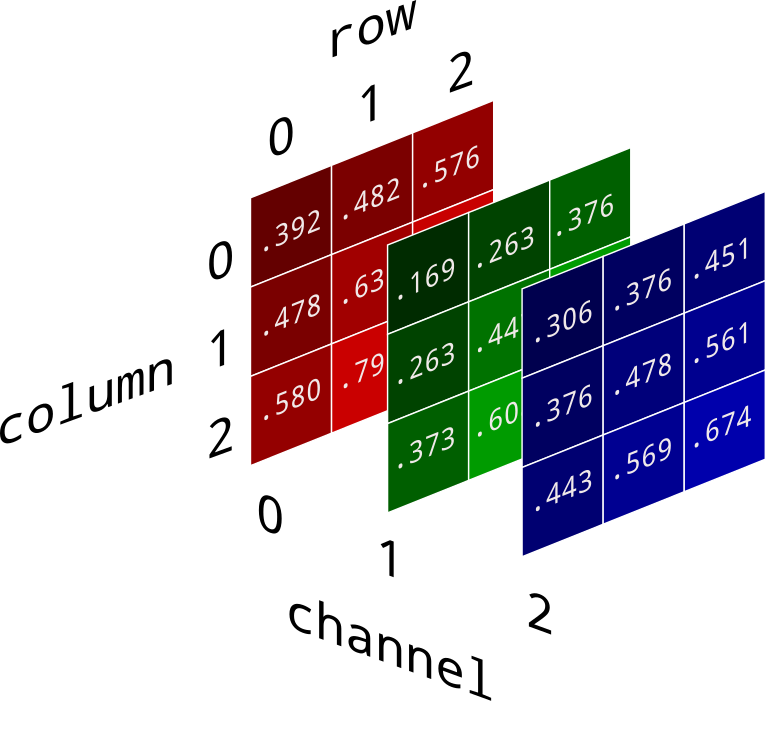
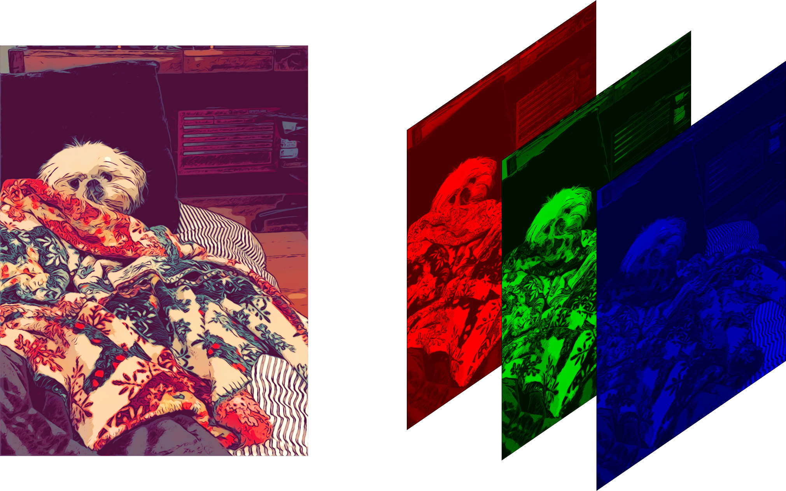
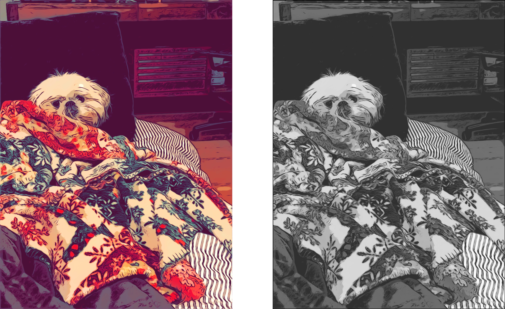
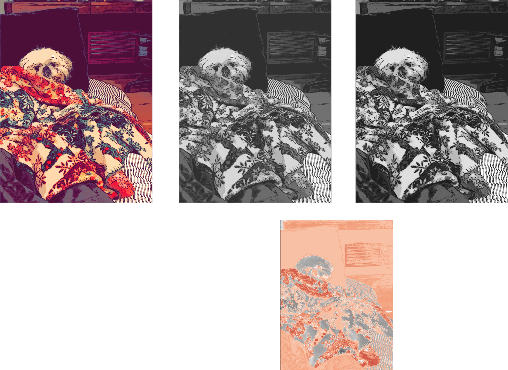
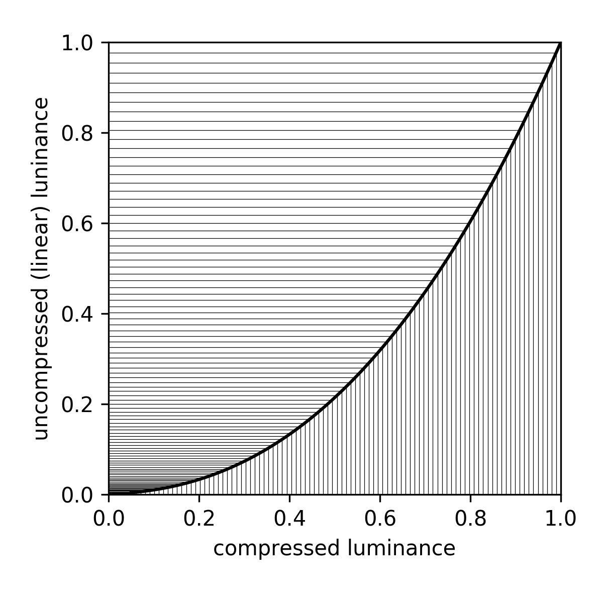
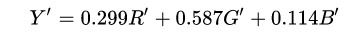
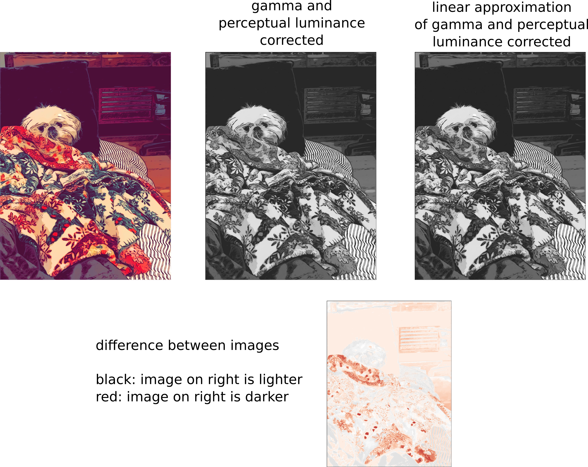

Occasionally the need arises to convert a color image to grayscale. This need came up when loading images taken on the surface of Mars as part of End-to-End Machine Learning Course 313, Advanced Neural Network Methods. We were working with a mixture of color and grayscale images and needed to transform them into a uniform format - all grayscale. We'll be working in Python using the Pillow, Numpy, and Matplotlib packages.
By the way, all the interesting information in this post all comes from the Wikipedia entry on Grayscale. (If you find it helpful, maybe send them a dollar.)
Read in a color image
The code we're working from loads jpeg images for an autoencoder to use as inputs. This is accomplished with using Pillow and Numpy:
from PIL import Image
import numpy as np
color_img = np.asarray(Image.open(img_filename)) / 255This reads the image in and converts it into a Numpy array. For a detailed description of what this does and why, check out the prequel post to this one: How to Convert a Picture into Numbers. For grayscale images, the result is a two-dimensional array with the number of rows and columns equal to the number of pixel rows and columns in the image. Low numeric values indicate darker shades and higher values lighter shades. The range of pixel values is often 0 to 255. We divide by 255 to get a range of 0 to 1.
Color images are represented as three-dimensional Numpy arrays - a collection of three two-dimensional arrays, one each for red, green, and blue channels. Each one, like grayscale arrays, has one value per pixel and their ranges are identical.

 Image credit: Diane Rohrer
Easy peasy: Average the channels
An intuitive way to convert a color image 3D array to a grayscale 2D array is, for each pixel, take the average of the red, green, and blue pixel values to get the grayscale value. This combines the lightness or luminance contributed by each color band into a reasonable gray approximation.
img = numpy.mean(color_img, axis=2)
The axis=2 argument tells numpy.mean() to
average values across all three color channels.
(axis=0 would average across pixel rows and
axis=1 would average across pixel columns.)

Well, actually...channel-dependent luminance perception
To our eyes green looks abount ten times brighter than blue. Through many repetitions of carefully designed experiments, psychologists have figured out how different we perceive the luminance or red, green, and blue to be. They have provided us a different set of weights for our channel averaging to get total luminance.

The results are noticeably different and, to my eye, more accurate.

Well, actually...gamma compression
We are able to see small differences when luminance is low, but at high luminance levels, we are much less sensitive to them. In order to avoid wasting effort representing imperceptible differences at high luminance, the color scale is warped, so that it concentrates more values in the lower end of the range, and spreads them out more widely in the higher end. This is called gamma compression.
To undo the effects of gamma compression before calculating the grayscale luminance, it's necessary to apply the inverse operation, gamma expansion:

The benefit of gamma compression is that it gets rid of banding in smoothly varying dark colors, like a photo of the sky at twilight. The downside is that if we want to do anything like adding, subtracting, or averaging bands, we first have to undo the compression and get the luminance back into a linear representation.

There is lightening throughout the image after accounting for gamma compression. It brings the luminance up to be a closer match to that of the original image. Finally, we have a high quality grayscale representation.
Well, actually...a linear approximation
The gamma decompresssion and re-compression rack up quite a large computation cost, compared to the weighted averages we were working with before. Sometimes speed is more desirable than accurate-as-possible luminance calculations. For situations like these, there is a linear approximation:

This lets you get a result that's a little closer to the gamma-compression-corrected version, but without the extra computation time.

As you can see, the results are not bad at all. They tend to be a little darker, especially through the red mid-range values, but arguably just as good in most practical respects.
This method of calculating luminance is codified in the standard ITU-R BT.601 Studio encoding parameters of digital television for standard 4:3 and wide screen 16:9 aspect ratios. which incidentally was awaded an Emmy in 1983.
Which one should I use?
If close is good enough or if you really care about speed, use the linear approximation of gamma correction. This is the approach used by MATLAB, Pillow, and OpenCV. It is included in my Lodgepole image and video processing toolbox:
import lodgepole.image_tools as lit
gray_img = lit.rgb2gray_approx(color_img)
But if you simply must have the best results, splurge on the whole gamma decompression - perceptual luminance corrected - gamma re-compression pipeline:
import lodgepole.image_tools as lit
gray_img = lit.rgb2gray(color_img)
If after reading this far you insist on straight up averaging the three channels together, I will judge you.
Now go make beautiful grayscale images!